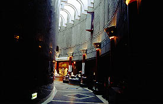

幸せの丘 ありあんす/山梨県中道町
ズバリ今回のテーマは幸福です。
・・・中央高速の甲府南IC付近の丘の上に神殿風の建物がそびえている。
シェル構造の屋根のてっぺんにはいわくありげな太陽型のマークを掲げた円形の神殿。
幸運をもたらす印鑑でお馴染み日本印相学会がみなさんに幸福をお届けする、幸せの丘ありあんすだ。
ところで「ハンコ屋の親分みたいなトコがなぜこんな建物を？」と思われる諸兄も多いかと思うが、そこはホレ、幸福ハンコですから、
幸福パワー炸裂なのである。
ハンコ屋さんだけにマンモス象牙彫刻美術館、レストランなどいちおう観光施設の体裁を成している。
ちなみにありあんす（alliance)とは同盟、提携の意。ここにくれば幸せ同盟の一員、ってな訳。
さあ、貴方もレッツ幸福！
・・・というわけで、眠気を誘うような暖かいある日、幸せの丘ありあんすに向かっていた。
丘の麓の素敵なゲートを潜る。益々期待は膨らむ・・・か？
頂上まで続く道沿いには「キムチほうとう」や「グラタンほうとう」といった私のお口には合わなそうなノボリが並んでいる。併設されたレストランのメニューなのだろう。
で、頂上へ。
神殿の右側に変な形の鳥居を持つお堂があった。
中を覗いてみるとアラびっくり、ハンコがうずたかく積まれている。
その向こうには女性の像が立っている。幸福の女神のつもりなのであろう。
で、神殿にはいる。
ロビーから順路を辿っていくといきなりマンモスの模型が。
で、マンモスの前に100円玉投入口が。これでマンモスの鳴き声が聴けるらしい。
で、100円投入。すると申しわけ程度の説明ナレーションがあり、次にマンモスの鼻が動き出す、で最後に
ぱお〜〜〜ん
という鳴き声。
・・・想像と一分の狂いもない展開、ありがとうございました・・・
で、先に進む。この建物は円形の回廊状の造りになっている。

次はお約束の印鑑販売コーナー。しつこい勧誘販売などはなく、ちょっとホッとする私。
価格としては普通のハンコとそんなに変わらないようであった。迂闊な事は言えないが。
で、気になったのが元横綱千代の富士関の写真。ここに来た際の写真がこれ見よがしに飾られている。いいのか、千代。
さらに進むと円形回廊に沿って占いコーナーがずらりと並んでいる。
ついたての向こうから投げかけられる占い師さん達の無言の視線が痛い。
ここで占ってもらって自分に合った幸福の印鑑を買って頂こう、という趣向なのだろうか？
去年ブランニュー印鑑を買ったばかりの私としては大変残念ながらここはきっちり素通りさせていただいた。
で、ここのメイン施設マンモス象牙彫刻美術館へ。正しくは「マンモス象牙」と「象牙彫刻」の展示と解釈したい。
巨大な象牙のゲート（本物）を潜ると中には象牙細工のオンパレード。
宝船、薬師寺三重塔、七福神等々・・・
中でも最大の目玉は台湾故宮博物館とココにしかないといわれる26層くり抜き宝玉。直径15センチ程の象牙製の球の内部を透かし彫りの要領でくり抜いていき、26重になっているというもの。一体どうやって作ったのかは謎だそうである。
凄い！とか思ってしまいました。
最近は象牙も輸入制限（禁止だっけか？）されていて、世論的にも大っぴらに象牙バンザイ！みたいな風潮は影を潜めている御時世だが、ここは象牙マニアのサンクチュアリ。アフリカの象さんの固体数の激減がどうのといった話もここではどこ吹く風。その細工の素晴らしさにキッチリ心うたれて頂きたいモンである。
ちなみにこの美術館内部は撮影禁止。大変残念なので皆様には気合いの逸品、パンフレットの写しを御覧頂きその雰囲気の一部でも感じていただけたら幸いである。
前のめりな宣伝文句が泣かせる。
で、一番奥には世界的にも貴重といわれるマンモスの牙がごろんと何の惜し気もなく積まれている。
そこにも千代の富士がマンモスの牙を感動の面持ちで眺めている写真があった。日本印相協会と千代の富士の濃ゆそうな関係がとても気になるところではあるが、私の好きだった力士ゆえ深く考えるのはやめておこう。
ハイ、前節が長くなってしまったが、ここからが本題。
実はこの円形回廊の中心部には何ともデカい女神さんがいるのだ。
鳳凰殿と呼ばれる円形ホールの正面に立つこの像、高さは10メートル近いのだろうか。女神というよりは単なる女性の人物像といった感じだ。あ、さっき表の神社で見た女神じゃん。
でも、これだけ奉りこんであって、しかも像の前に賽銭箱が置いてあるので信仰の対象なのであろう。
幸福ハンコのみなさんが信仰するオリジナル本尊。
ここには撮禁の貼紙がなかったので、パチリとやらして頂きました。
ちなみに八角形の賽銭箱はそれぞれの願いごとによって投入口がちがい、手でグルグル廻す仕組み。かっこいいぞ。
ふと、貼紙が眼に入る。1時間に1回、女神の音と光のショーというものがあるらしい。
係員の方に伺うと、「あ、じゃあ今からやりましょう」となんとも御親切な対応。
円形ホールの椅子に座りショーの開始を待つ。
ああ、多分プラネタリウムみたいな星空に流星とかオーロラとが出て来て赤とか青とかのスポットライトで女神を照らすだけなんだろうなあ、そんでもってよくありがちな癒し系ヒーリングミュージックみたいなの流して・・・などと思っている内にあたりが暗くなりショーが始まった。
で、
・・・想像と一分の狂いもない内容だった・・・
女神の両脇の壁面には全国各地から寄せられた印鑑が山のように積んであった。
これは今まで使っていたハンコを捨ててここで幸福ハンコを買っていきなさいという事なのか。
それともハンコを買って願いが叶ったらまた新しいハンコに買い替えるのだろうか・・・
象牙細工でクラッと来て、占いで幸福ハンコを決めて、幸福ハンコを購入。で、幸せになるという幸福の無限輪廻培養システムがこの円形回廊の中をグルグルと回っているような気が。
神殿から外に出る。小春日和だというのに胃の辺りがもたれたようにずしーんと重い。
別にグラタンほうとうを食べた訳でもないのだが、どうもここの持つ独特な雰囲気に胃が拒否反応をおこしているようだ。
これが幸せの重みなのさ！と最大限に好意的な解釈をして「幸せの丘」を後にした私であった。
情報提供は砂川
賢一さんです。
2001.3.
珍寺大道場 HOME